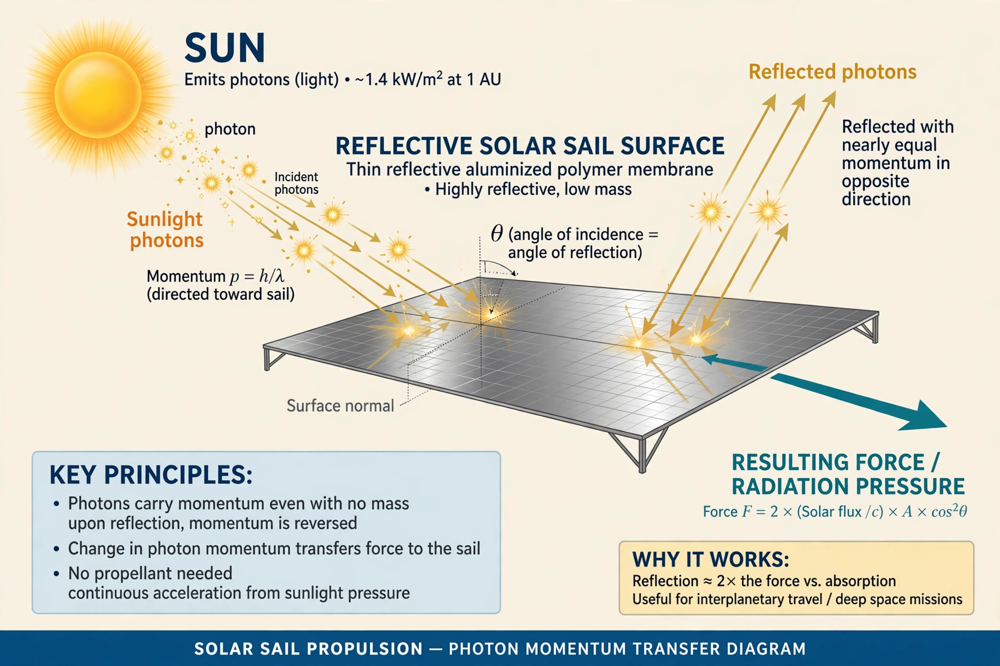

| Radiation pressure | |
|---|---|
| Symbol | P or prad |
| SI unit | pascal (Pa) |
| Derivations | P = I/c (absorption); 2I/c (reflection) |
| Key figures | Johannes Kepler; James Clerk Maxwell; Pyotr Lebedev; Ernest Nichols; Gordon Hull |

Radiation pressure (also known as light pressure) is the mechanical pressure exerted upon a surface due to the exchange of momentum between the object and the electromagnetic field. This includes the momentum of light or electromagnetic radiation of any wavelength that is absorbed, reflected, or otherwise emitted (e.g. black-body radiation) by matter on any scale (from macroscopic objects to dust particles to gas molecules). The associated force is called the radiation pressure force, or sometimes just the force of light.
Johannes Kepler postulated in 1619 that the pressure of light was responsible for the tails of comets always pointing away from the Sun. In 1873, James Clerk Maxwell published his Treatise on Electricity and Magnetism, in which he showed that electromagnetic radiation carries momentum and therefore exerts pressure. The effect was first measured experimentally by the Russian physicist Pyotr Lebedev in 1900, and independently confirmed by Ernest Fox Nichols and Gordon Ferrie Hull in 1901–1903 using the Nichols radiometer.
For radiation of intensity I incident on a perfectly absorbing surface, the pressure is P = I/c, where c is the speed of light. For a perfectly reflecting surface the pressure is doubled: P = 2I/c. At Earth's distance from the Sun, sunlight has an intensity of about 1,361 W/m², giving a radiation pressure of roughly 4.5 μPa on an absorbing surface and about 9 μPa on a reflecting one. Although tiny, the force is significant for spacecraft dynamics and comet dust.
Radiation pressure is the operating principle of the solar sail, a proposed method of spacecraft propulsion demonstrated by Japan's IKAROS probe in 2010 and the Planetary Society's LightSail spacecraft. It also plays a crucial role in astrophysics, limiting the luminosity of massive stars via the Eddington limit, shaping comet tails, and driving the dynamics of dust in protoplanetary disks. The Yarkovsky effect and Poynting–Robertson drag are related phenomena affecting small bodies in the Solar System.